四足歩行ロボット Unitree Go2 を物理シミュレータ Genesis 上で扱い、(1) 速度指令に追従する歩行方策を強化学習(PPO、4096 環境並列)で獲得し、(2) その上に、胴体に取り付けた疑似 2D LiDAR の距離だけを用いる障害物回避と経路追従のナビゲーション層を載せて、2 m 角の正方形経路を巡回させた。ナビゲーション層は v1 反応的回避 → v2 コミット区間 → v3 占有格子地図 + A* 大域計画の 3 段階で系統的に改良し、各段階を障害物をランダム配置した 45 配置で定量評価した。巡回成功率は 9%(回避なし)→ 91%(v1)→ 96%(v2)→ 100%(v3)、障害物への物理接触率は 91% → 0%(同一配置での対応あり McNemar 正確検定 p < 0.0001、転倒 0 件)。v3 は v1 の速さと v2 の確実性のトレードオフを解消し、成功分の所要時間は v1 より中央値 3.4 s、v2 より 6.1 s 短い(符号検定 p < 0.0001)。さらに、2D スキャンの水平面より低い箱(0.15 m)とテーブルの天板という「高さ方向で通行可否が変わる障害物」を混ぜた 30 配置では、2D LiDAR の成功率は 3%(接触 97%)に落ち、点群を胴体の高さ帯で切って 2D 地図に投影する 3D 疑似 LiDAR(72 × 16 層)で 100%・接触 0% に回復した(p < 0.0001)。評価は物理接触を主指標とし、Wilson 信頼区間と対応あり検定、シミュレータの非決定性の切り分けを含めて設計した。実機 Go2 の「自己位置 → 地図・経路計画 → 速度指令 → 歩行コントローラ」と同じ層構造を再現しており、歩行(学習)とナビゲーション(決定的・説明可能)を疎結合に分けている点が特徴である。全工程は M1 Max の Mac 1 台(Metal / CPU)で完結し、GPU サーバやクラウドは使っていない。
実機の自律巡回ロボットは「自己位置推定 → 経路計画 → 速度指令 → 歩行コントローラ」の層構造で作られ、下層ほどロボット固有、上層ほどタスク固有である。本課題では、このうち速度指令 → 歩行を強化学習で、センサ → 速度指令を古典的な制御(反応的回避、最終的には占有格子地図 + A*)で構成し、シミュレータ上で同じ構造を再現することを目的とした。狙いは次の 3 点である。
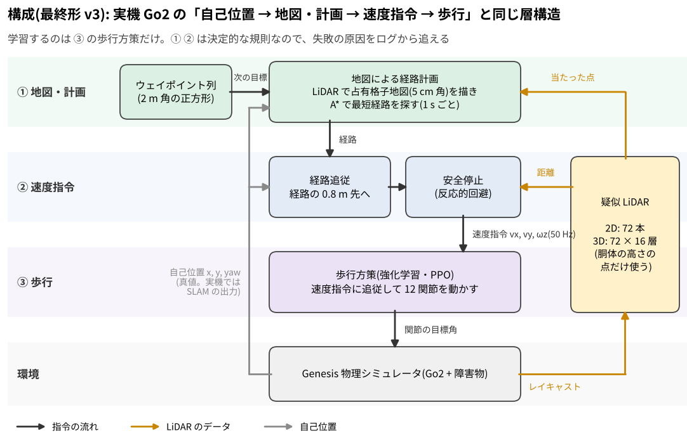
| 層 | 実装 | 実機 Go2 との対応 |
|---|---|---|
| 経路追従 | 4 つのウェイポイント(2 m 角)への P 制御。進行方向誤差 → ωz、距離 → vx。到達判定 0.3 m | Nav2 のローカル追従に相当 |
| 地図 + 大域計画(v3) | 地面除去後の LiDAR ヒット点から log-odds 占有格子(0.05 m、120×120)を逐次更新。占有セルを Go2 の半径 0.35 m で膨張し、8 近傍 A* で次のウェイポイントまでの経路を 1 s ごとに再計画。経路上 0.8 m 先をローカル目標として経路追従に渡す | Nav2 の costmap + global planner |
| 障害物回避(v1 / v2、v3 の下層) | 進路幅 ±0.4 m の「回廊」内に入った LiDAR ヒットのみを正面障害物とみなし、1.0 m 未満で減速、0.45 m 未満で停止・その場旋回。旋回方向は最近接ヒットの反対側。ωz の変化率を ±0.1 rad/s/step に制限 | 反応的なローカル回避(DWA/VFH の簡易版) |
| 疑似 LiDAR(2D / 3D) | Genesis の Raycaster を胴体リンクに取付(高さ +0.15 m、床から 0.44 m)。2D: 360°/5° 刻み 72 本、最大 5 m、ヒット点の z < 5 cm を床とみなして除去(地面除去)。3D: 72 方位 × 16 層(垂直 ±30°)の点群を「地面 / 胴体の高さ帯(0.05〜0.49 m)/ 頭上 / 自機」に分類し、胴体帯の点の最小水平距離を 72 本に投影(§9)。12 セクタの最小距離に集約 | 2D は 3D LiDAR の水平断面。3D の高さ帯投影は Nav2 の voxel layer と同じ処理 |
| 歩行方策 | PPO(rsl-rl)。観測 45 次元(胴体角速度・重力方向・速度指令・関節角/角速度・前回行動)、行動 12 次元(関節目標角の補正)、50 Hz、PD 制御(kp=20, kd=0.5) | Go2 の歩行コントローラ |
| シミュレータ | Genesis 1.4.4(Apache-2.0)。学習は Metal バックエンド(4096 環境)、評価・録画は CPU バックエンド(1 環境) | — |
速度指令の範囲は vx ∈ [0, 0.8] m/s、vy ∈ [−0.2, 0.2] m/s、ωz ∈ [−0.8, 0.8] rad/s で、回避則の出力もこの範囲にクリップする。衝突判定は Genesis の接触情報(get_contacts)を用いる。
Genesis 付属の Go2 歩行例題(Legged Gym 由来の報酬: 指令速度への追従 + 上下動・姿勢・行動変化のペナルティ)を出発点にした。ただし既定の例題は速度指令が 前進 0.5 m/s に固定されており、「前進しかできない方策」しか得られない。巡回には減速・停止・旋回が必要なので、指令範囲を上記のとおり広げ、4 秒ごとに再サンプリングする設定で 4096 環境 × 300 イテレーションを学習した(M1 Max、Metal、約 9 分、7.4〜7.8 万 steps/s)。
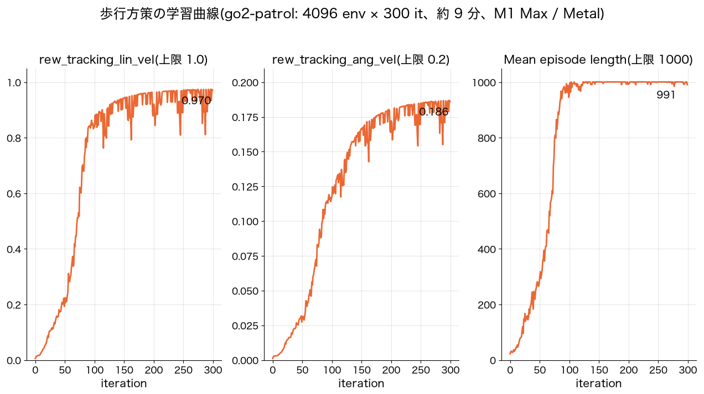
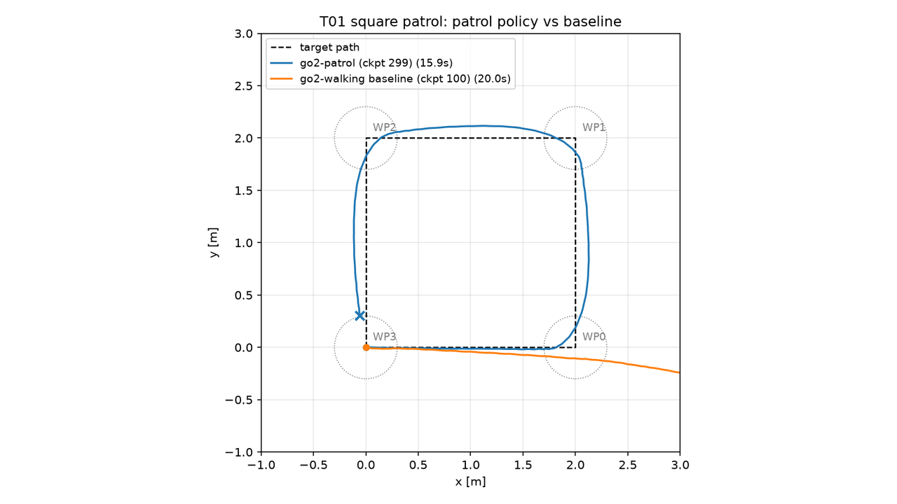
図 3 のとおり、既定方策は WP0 到達後に旋回指令に追従できず直進する。巡回には指令範囲を広げた再学習が必須であり、これは後述の 20 配置評価でも既定方策が全条件で成功 0% だったことで裏付けられた。
Raycaster を既知配置(正面 1.3 m に箱、右 1.85 m に円柱)で単体検証し、距離が幾何計算の期待値と 2 mm 以内で一致すること、Metal と CPU で値が完全一致することを確認した。重要だった落とし穴が 2 つある。(1) 胴体が前傾すると水平レイが床に当たり、2〜5 m 先に偽の障害物が見える。ヒット点の高さで床を除去する処理を入れ、障害物なしの巡回 802 ステップで除去後の偽ヒットが 0 本になることを確認した。(2) 初期姿勢(落下前)はセンサが高さ 0.5 m の箱を越えて見えないため、障害物の高さは 0.6 m 以上とし、着地後からスキャンを使う。
回避則は当初「正面 ±45° と左右セクタの空き具合で旋回方向を決める」設計だったが、3 配置の試験で 2 配置が未到達となった。ログを調べると、「正面右の障害物に対して、左の遠くに別の障害物があるという理由で右(障害物側)へ旋回する」欠陥があった。そこで正面判定を 進路幅 ±0.4 m の回廊に、旋回方向を 最近接ヒットの反対側に変更した(v1)。これにより 3 配置すべてで 4/4 到達・接触 0 となった。
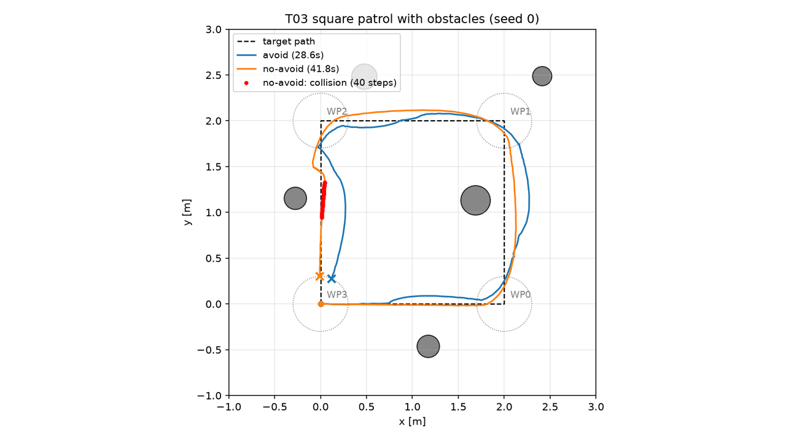
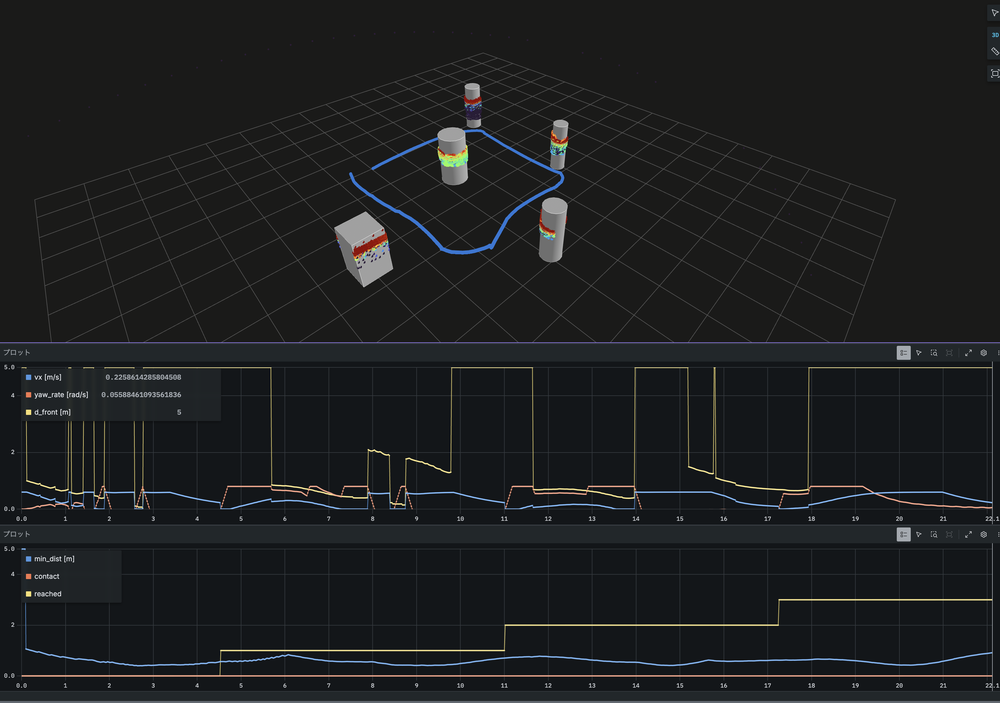
巡回中の全データ(TF、スキャン、点群、軌跡、障害物、指令)は Foxglove SDK で MCAP に書き出せるようにした(ROS 不要)。図 5 は実機の LiDAR 運用と同じ可視化経路で、点群が障害物の輪郭を描き、正面距離が下がると vx が落ちて ωz が立つ因果が時系列で読める。
| 障害物 | 歩行方策 | 回避 | n | 成功率 | 接触率 | 所要(成功分) |
|---|---|---|---|---|---|---|
| なし | 既定(前進のみ) | なし / あり | 5+5 | 0% / 0% | 0% / 0% | — |
| なし | 拡張 | なし / あり | 5+5 | 100% / 100% | 0% / 0% | 15.9 / 16.1 s |
| あり | 既定(前進のみ) | なし / あり | 15+15 | 0% / 0% | 47% / 67% | — |
| あり | 拡張 | なし / あり(v1) | 15+15 | 13% / 93% | 87% / 0% | 16.0 / 33.6 s |
回避則は拡張方策と組み合わせたときだけ効く。既定方策に回避則を付けると接触率がむしろ 47% → 67% に上がった。既定方策は停止指令には従わず約 0.3 m/s で前進し続ける一方、旋回指令にはわずかに追従するため、「減速して横へ逃げる」つもりの指令が減速なしの緩い旋回になり、経路脇の障害物へ寄っていく。回避則は「指令どおりに減速・旋回できる歩行方策」を前提にしており、前提が崩れると安全側に働かない。期待と異なる結果だがそのまま報告する。
| 条件 | 成功率 [95% CI] | 接触率 | 所要 [s] | 経路効率 |
|---|---|---|---|---|
| 回避なし | 4/45 = 9% [4–21] | 91% | 15.9 | 1.07 |
| 回避 v1 | 41/45 = 91% [79–96] | 0% | 31.6 | 1.00 |
| 回避 v2(コミット区間) | 43/45 = 96% [85–99] | 0% | 31.7 | 0.81 |
| v3(占有格子 + A*) | 45/45 = 100% [92–100] | 0% | 24.2 | 1.05 |
転倒 0/135。所要・経路効率は成功分の平均。対応あり McNemar 正確検定: 回避なし vs v1 — 成功 p < 0.0001(v1 のみ成功 37、なしのみ 0)、接触 p < 0.0001(41 vs 0)。v1 vs v2 — 成功 p = 0.69(v2 のみ成功 4、v1 のみ 2)、所要時間の差 中央値 +1.1 s(符号検定 p = 0.51、Wilcoxon p = 0.76)。v3 vs v1 — 成功 p = 0.125(v3 のみ成功 4、v1 のみ 0)、所要時間(両方成功 41 配置)中央値 −3.4 s、v3 が速い 34 / 遅い 3(符号検定・Wilcoxon とも p < 0.0001)。v3 vs v2 — 成功 p = 0.5(v3 のみ 2、v2 のみ 0)、所要時間(43 配置)中央値 −6.1 s、36 / 5(p < 0.0001)。v1・v2 の失敗 6 配置はすべて v3 で成功し、v3 で新たに失敗した配置はない。
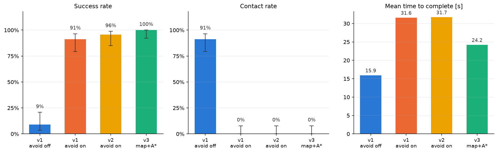
転倒 0/180。成功率の改善は回避なし → v1 で統計的に明確、v1 → v2 → v3 の差は失敗数がもともと少ないため McNemar では示せない。一方、v3 の所要時間の短縮は対応あり比較で明確で、v1/v2 が時間切れになった 6 配置を含む全配置を 17〜46 s で完走した。
v1 の失敗はすべて同じ型だった。経路の真正面に障害物があると「停止 → その場旋回 → 回廊が空く → 経路追従が元の向きへ戻す → 再び停止」を繰り返す振動で、接触も転倒もないまま時間切れになる(図 7 左)。原因は、回廊が空いた瞬間に経路追従へ制御を戻すことにある。そこで v2 では、回避が発動したら旋回方向を Tcommit = 2.0 s 固定し、正面が空いても Tclear = 1.0 s 直進してから経路追従に戻す「コミット区間」を導入した。初版は直進中に経路追従の vx が 0 になって止まる欠陥があり、巡航速度 0.4 m/s の下限を入れて修正した(Tcommit 1.0 s は悪化、2.0 s で改善)。
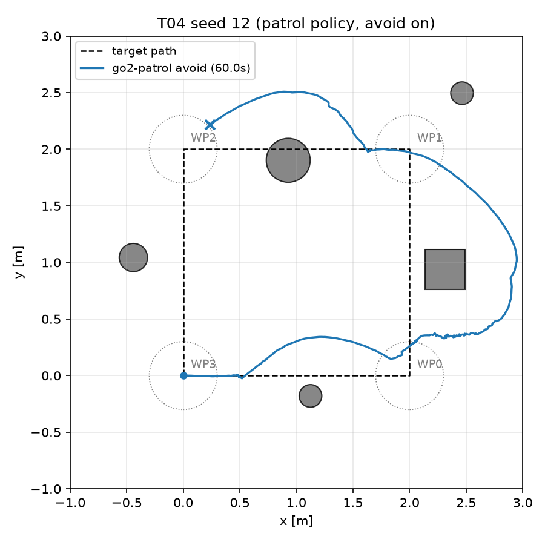
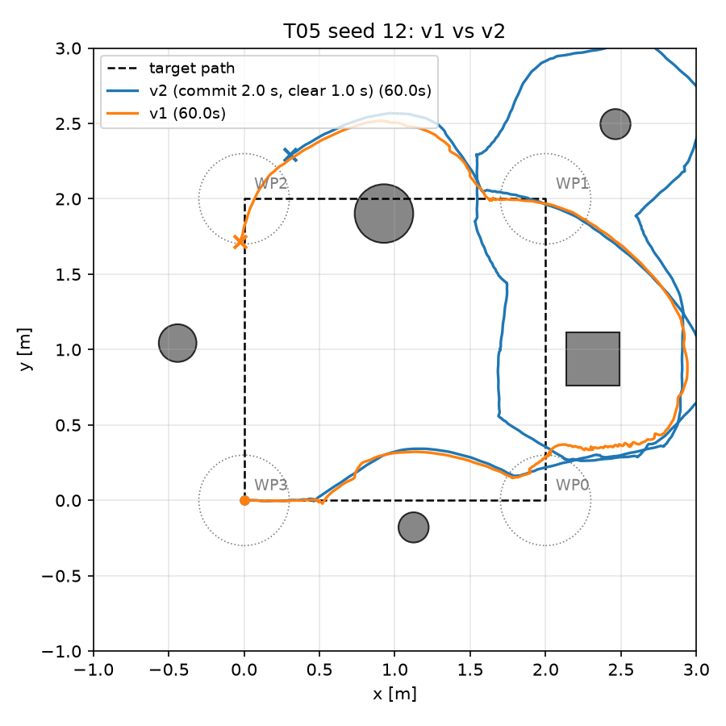
v2 は 15 配置では 15/15 だったが、45 配置では新たに 2 配置で失敗し、平均所要時間は v1 と変わらず(31.6 → 31.7 s)、統計的な差は示せなかった(p = 0.69)。一方で経路効率は 1.00 → 0.81 に下がった。経路を塞ぐ障害物の数で層別すると構造がはっきりする。
| 経路上の障害物数 | 配置数 | v1 成功率 | v2 成功率 | v1 所要 [s] | v2 所要 [s] |
|---|---|---|---|---|---|
| 0〜1 | 24 | 100% | 96% | 26.6 | 28.4 |
| 2 以上 | 21 | 81% | 95% | 42.7 | 38.2 |
所要は失敗 = 60 s を含む平均。v1 で失敗し v2 で成功: 4 配置(いずれも経路上に障害物 2 個以上)。v1 で成功し v2 で失敗: 2 配置(経路脇 0.2〜0.5 m に障害物が 2 個ずつ並び、v2 がそれらにもコミットして外側へ出て到達円に入り損ねる)。
v2 は「難しい配置を落とさない」代わりに「易しい配置で遠回りする」。v1 の振動も v2 の遠回りも、反応的回避が障害物の向こう側を知らないことの裏返しである。そこで v3 では、LiDAR スキャンから 2D 占有格子地図を逐次構築し(log-odds 更新: ヒット点 +0.85、レイ上 −0.4、未知 = 通行可)、Go2 の半径 0.35 m で膨張した上で A* により次のウェイポイントまでの経路を 1 s ごとに再計画し、経路上 0.8 m 先をローカル目標として経路追従に渡す構成にした(実機の costmap / global planner に相当)。v1 の反応的回避は安全停止として下層に残す。地図は既知配置での単体テスト(占有セルが箱の正面 1.28〜1.33 m に出る、期待 1.30 m)で検証した。計算コストは地図更新 0.6 ms/step、A* 4 ms/回で、評価の実行時間は v1/v2 と変わらない。
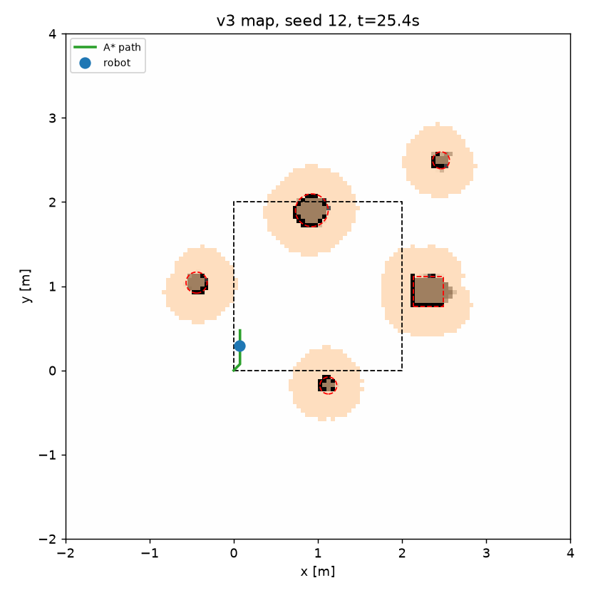
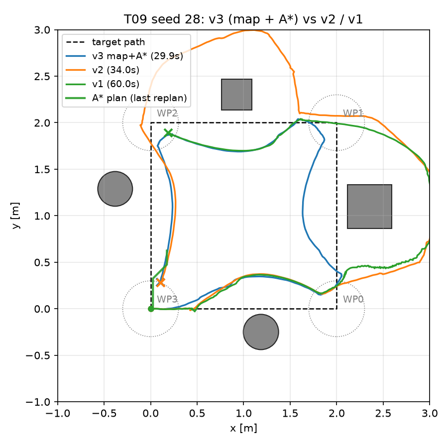
| 経路上の障害物数 | 配置数 | v1 所要 [s] | v2 所要 [s] | v3 所要 [s] | v3 成功 |
|---|---|---|---|---|---|
| 0 | 7 | 20.5 | 24.5 | 19.1 | 7/7 |
| 1 | 17 | 29.1 | 30.0 | 21.5 | 17/17 |
| 2 | 16 | 41.5 | 37.1 | 27.4 | 16/16 |
| 3〜4 | 5 | 46.7 | 41.6 | 30.1 | 5/5 |
所要は失敗 = 60 s を含む平均。v1/v2 の失敗配置(seed 12, 25, 26, 28)は v3 で各 2 回ずつ再実行し 8/8 成功・接触 0。45 配置を通して A* の「経路なし」は 0 回で、膨張半径を縮める退化経路は使われなかった。
v3 は全層で最速になり、v1/v2 のトレードオフは解消した。障害物が増えても所要時間の伸びが緩い(0 個 19 s → 3〜4 個 30 s)。v3 が v1 より 10 s 以上遅かった配置が 3 つあるが(いずれも成功)、下層の反応的回避が発動して減速した回と考えられる。改良の各段階は「失敗したエピソードのログを読んで原因を特定し、その原因に対応する層を 1 つ足す」手順で進めた: 振動 → コミット区間(時間の記憶)、遠回り → 地図(空間の記憶)+ 計画。
ここまでの障害物はすべて高さ 0.6 m 以上で、センサ面(床から 0.44 m)の 2D スキャンに必ず映る。実環境で問題になるのは、床に置かれた低い物や机の天板のようにスキャン面に映らないが胴体には当たる障害物である。立位と歩行中の実測(胴体最高点 0.35 m、歩行中 0.39 m、遊脚の最大高さ 0.02 m)から、低い箱(高さ 0.15 m、スキャン面の 29 cm 下、遊脚より上なので踏むと転倒しうる)とテーブル(天板 0.32〜0.36 m、スキャン面より下で胴体より低い。脚は半径 2 cm の円柱 4 本)を設計した。2D スキャンでは低い箱は見えず、テーブルは細い脚しか見えないため「通れる」と判断される。
3D 化はナビゲーション層を変えずに入力だけを差し替える形にした。Raycaster を 72 方位 × 16 層(垂直 ±30°、4° 刻み)にして点群を得、ヒット点の高さで「地面(< 0.05 m)/ 胴体の高さ帯(0.05〜0.49 m)/ 頭上 / 自機(下向きのレイが自分の脚に当たる点。胴体フレームの矩形で除外)」に分類し、胴体帯の点の最小水平距離を方位ごとに 72 本の仮想スキャンへ投影して、v1 の下層と v3 の地図にそのまま渡す。追加コストは +0.5〜0.8 ms/step で、評価・録画の速度にほぼ影響しない。
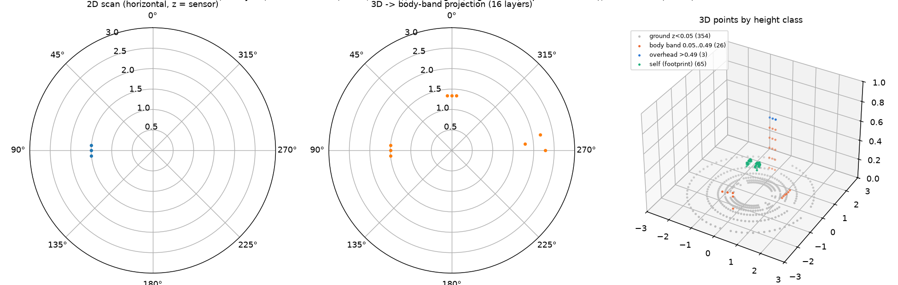
低い箱 1〜2 個・テーブル 1 台・高い障害物 1〜2 個を乱数配置し、少なくとも 1 つの低い障害物が経路上に来る 30 配置(seed 100–129)で、v3 の入力だけを変えて比較した。
| v3 の入力 | 成功率 [95% CI] | 接触率 | 転倒 | 所要 [s] | 失敗の内訳 |
|---|---|---|---|---|---|
| 2D LiDAR | 1/30 = 3% [1–17] | 97% | 6 | 16.6 | 低い箱に接触 7(うち転倒 6)、天板に接触 23 |
| 3D 16 層 ±30°(採用) | 30/30 = 100% [89–100] | 0% | 0 | 27.5 | — |
| 3D 25 層 ±12°(1° 刻み) | 10/30 = 33% [19–51] | 67% | 18 | 24.8 | 低い箱に接触 20(うち転倒 18) |
| 3D 30 層(±12° 1° 刻み + 下向き 5 層) | 29/30 = 97% [83–99] | 0% | 0 | 30.6 | 時間切れ 1 |
所要は成功分の平均。2D vs 3D 16 層: 成功・接触とも McNemar p < 0.0001(不一致 29 / 0)。25 層 vs 16 層: p < 0.0001(20 / 0)。30 層 vs 16 層: 成功 p = 1.0、所要は 16 層が速い 8 / 遅い 2(符号検定 p = 0.11)。
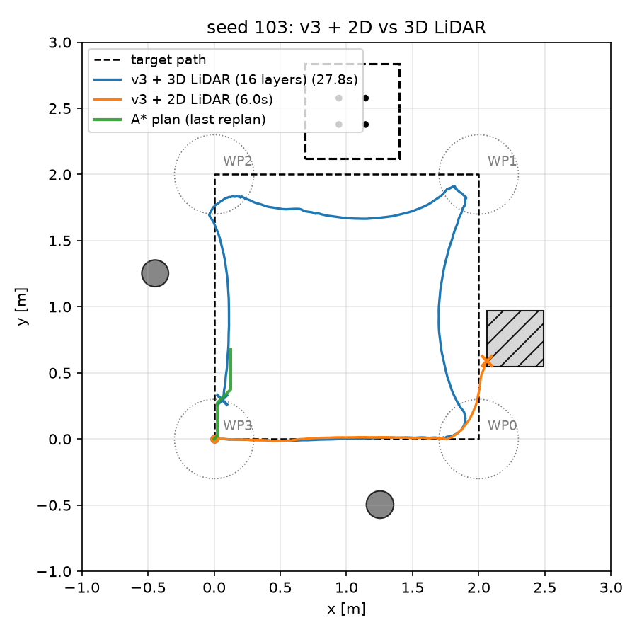
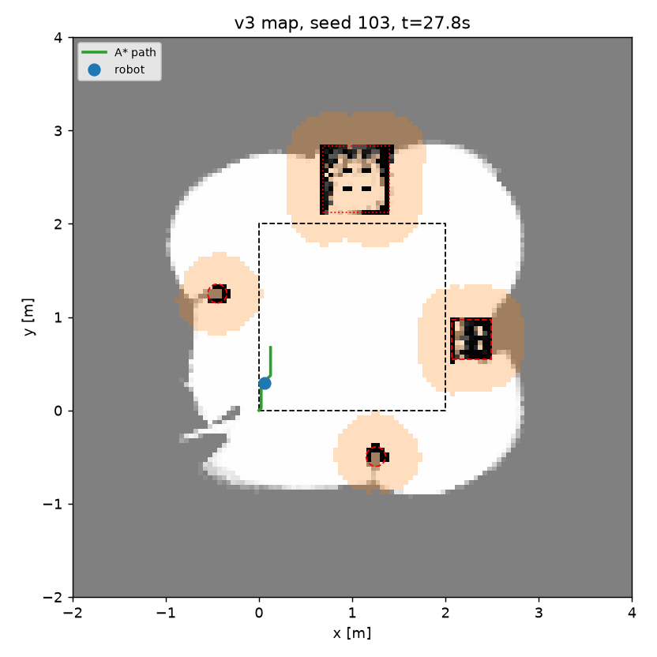
結果から 2 つの知見が得られた。第一に、層の密度より垂直視野、特に下方の視野が効く。テーブルの縁の検出が 4° 刻みの層の粗さで 0.3 m 遅れることを直すために ±12°・1° 刻みの 25 層を試したところ、縁の誤差は 0.37 m → 0.03 m(90 パーセンタイル)に下がったが、最下層(−12°)が高さ 0.15 m の箱に届くのは 1.35 m より遠い場合だけで、それより近づくと箱が全レイの下に隠れ、空き更新で地図から消えて踏んだ(成功 33%)。下向きの粗い層を足すと接触は 0 に戻った。センサ選定では角度分解能より「足元まで見える垂直視野」を先に確保すべきことを示している。第二に、センサを正確にしても速くならない。30 層は縁を連続して捉えるが、WP1 の 0.6 m 隣にテーブルがある配置で、v3 の経路(膨張 0.35 m)が縁から 0.35〜0.45 m を通ると、v1 下層の回廊(±0.4 m)と停止距離(0.45 m)が反応してその場旋回を続け、所要が 55〜60 s に伸びた(16 層は縁の検出が間欠的で、たまたま抜けられる)。原因は計画層と下層の安全余裕の干渉と、ウェイポイントが障害物に近すぎることで、実機の巡回でウェイポイントを壁際に置いたときに起きる現象と同じである。既定は 16 層とし、25 層・30 層は試作として残した。
--avoid-version で切り替えられる。reports/ に残し、設計変更の経緯を追跡できる。環境: macOS(Apple Silicon)、Python 3.11、genesis-world 1.4.4、rsl-rl-lib 5.5、torch 2.14、foxglove-sdk 0.30。pip install -r requirements.txt の後、python go2_train_patrol.py -e go2-patrol -b 4096 --max-iterations 300(学習)、python go2_patrol.py -e go2-patrol --ckpt 299 --seed 10 --avoid --avoid-version v3 --backend cpu --out out.mp4 --mcap out.mcap(巡回・録画。--avoid-version v1|v2|v3、--lidar 2d|3d。3D の混合配置は seed 100〜129)、python eval/run_eval.py ... && python eval/summarize.py(評価)。詳細はリポジトリの README と reports/01〜13。
使用 OSS: Genesis(Apache-2.0、Go2 例題 go2_env.py / go2_train.py を改変・複製し NOTICE に明記)、rsl_rl(BSD-3)、PyTorch、Foxglove SDK(MIT)。本リポジトリは Apache-2.0。